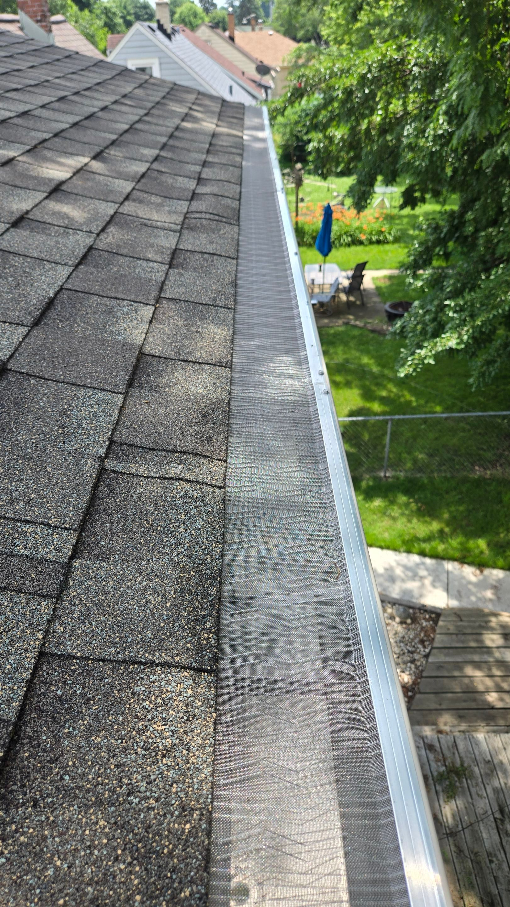
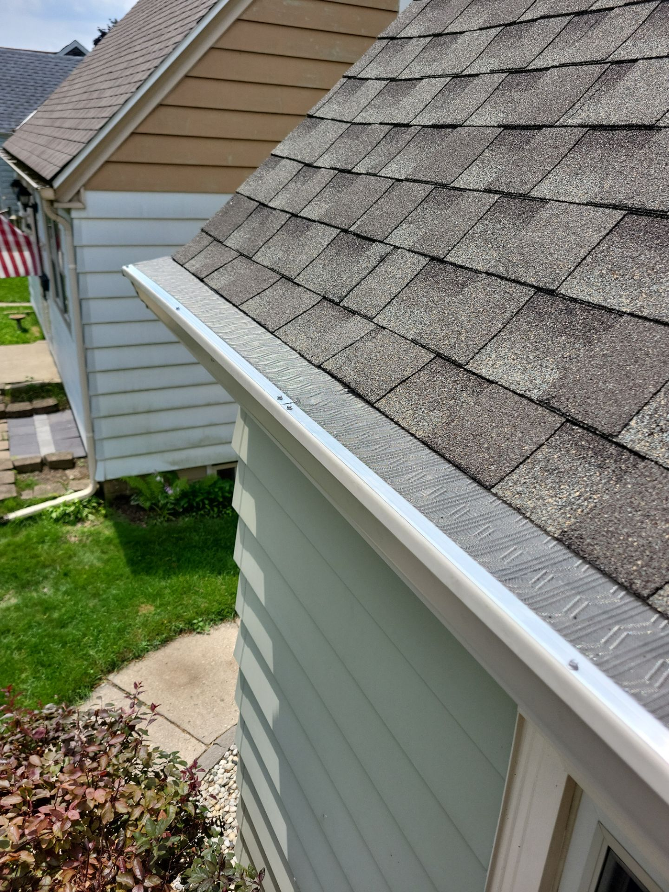
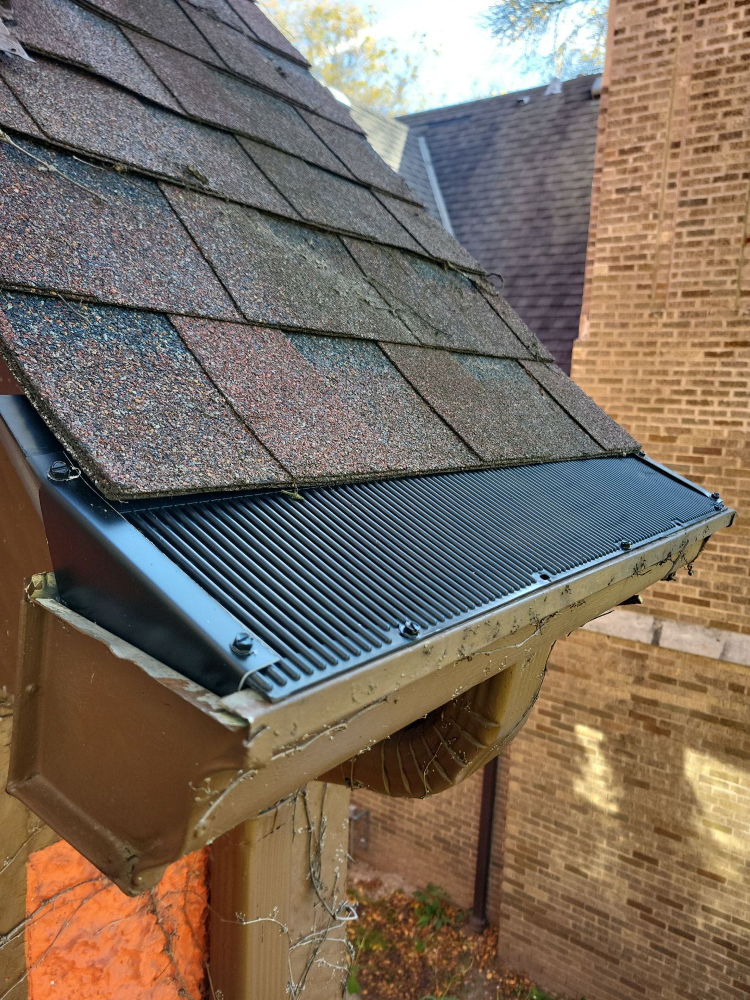

We carry Leafblaster Pro and Raindrop Pro and recommend the best fit for your home — or tell you honestly if guards aren't right for you. Free on-site assessment, no pressure.

We carry both Leafblaster Pro and Raindrop Pro, and we'll recommend the best option for your home — or tell you honestly if guards aren't the right call for your roof, debris load, or budget.
No high-pressure pitches. No one-size-fits-all package. Just a free on-site assessment and a straight answer.
Two of the best guard systems on the market. We'll recommend the right one for your home — or tell you honestly if guards aren't the answer.

America's top-rated micro-mesh guard. Surgical-grade stainless steel mesh bonded to an aluminum frame — blocks leaves, pine needles, shingle grit, and pollen.

A polypropylene-based guard that excels at handling heavy water flow and debris. A great alternative for certain roof pitches and debris profiles where a different design fits better than micro-mesh.
Not sure which one is right? That's what the free on-site assessment is for. We'll show you the trade-offs and recommend the best fit — or tell you honestly if neither makes sense for your home.
Keeps out oak leaves, maple seeds, pine needles, shingle grit — the debris that clogs Milwaukee gutters every fall and spring.
Proper water flow through guards reduces ice dam formation in Wisconsin winters — protecting your roof, soffit, and fascia.
Most guard-protected homes need cleaning far less frequently. Stop budgeting for yearly cleanings.
One of the longest product warranties in the industry — yours when installed by a Leafblaster Pro Certified & Raindrop Pro Certified contractor like us.
We come out to evaluate your existing gutters and recommend the right approach for your home.
We clean your gutters thoroughly before installing guards — so you start with a fully clear system.
Leafblaster Pro panels are cut to fit and secured with Geocel 2320 sealant per manufacturer specs.
Walk away knowing your gutters are protected for decades — backed by a 40-year warranty.